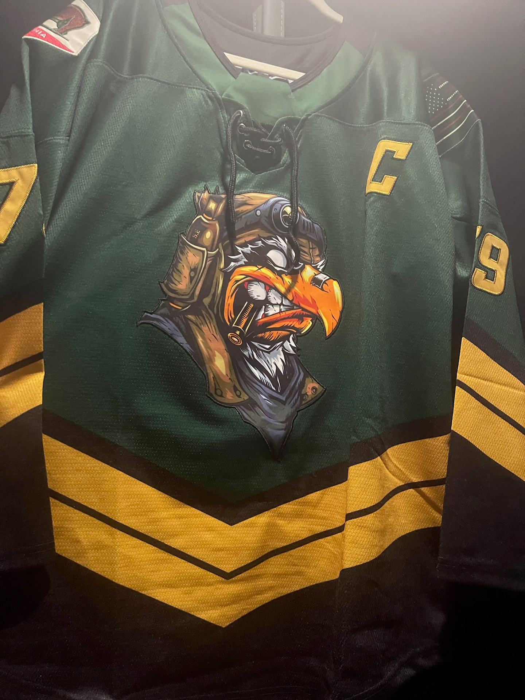
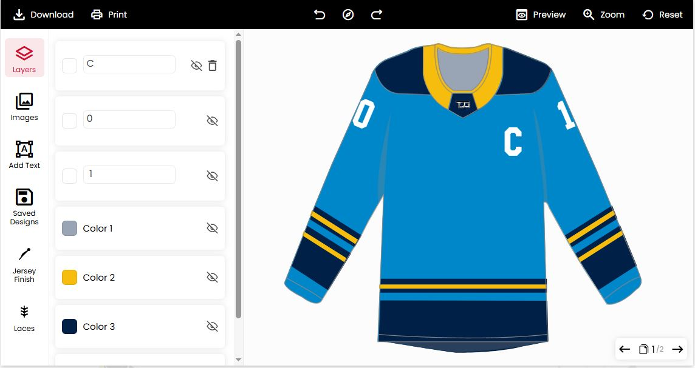
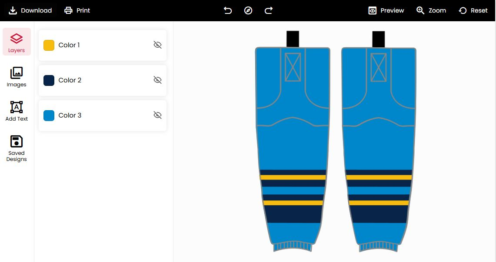
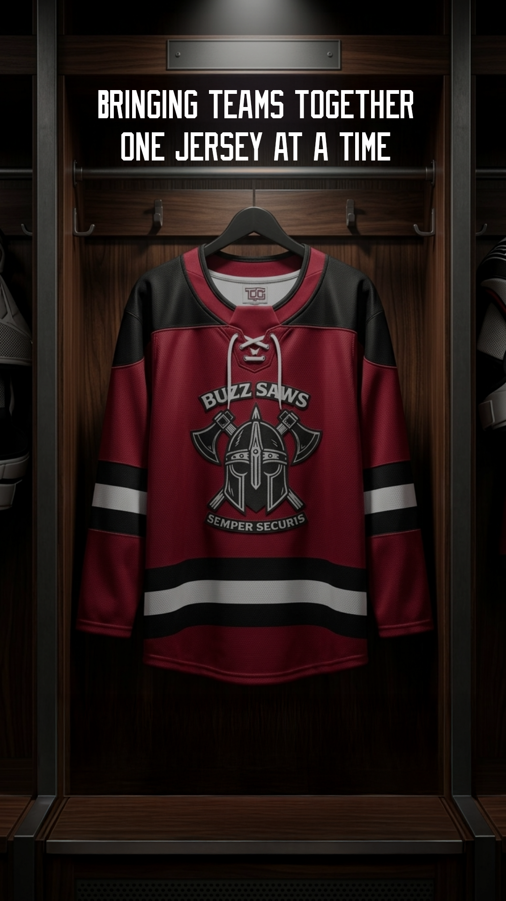
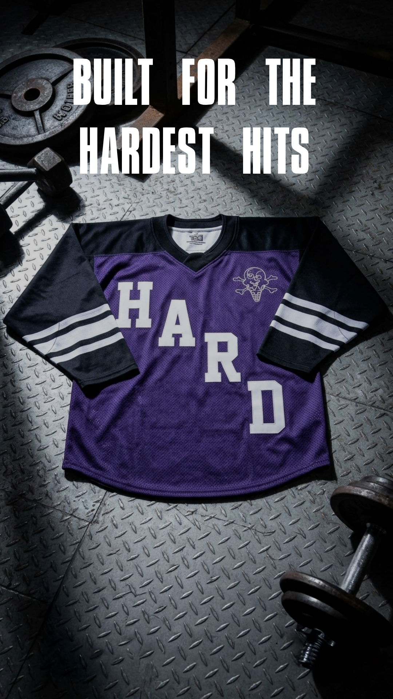
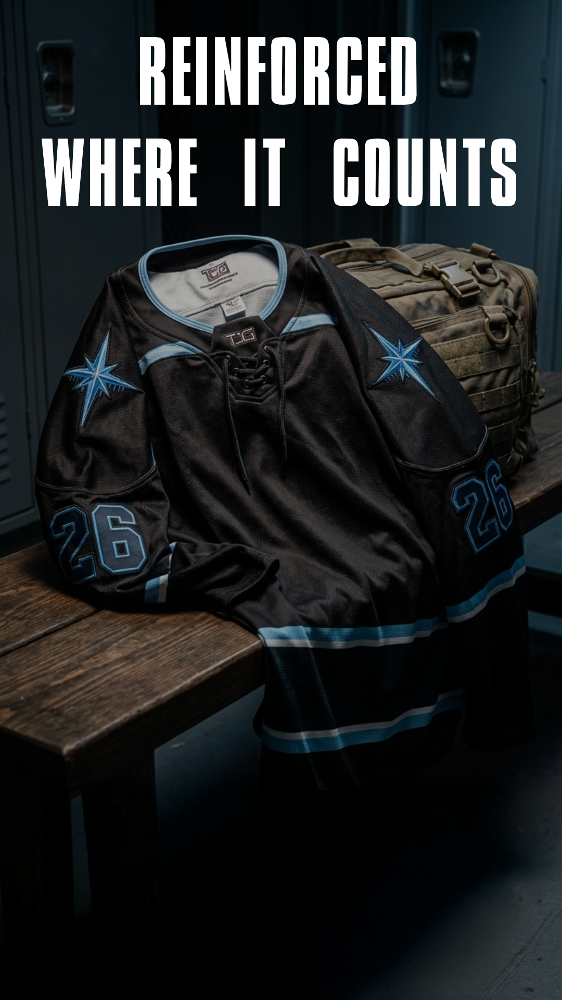

Flagship Case Study — E-commerce Product Systems
Configuring a custom product, at scale, in two languages.
The Jersey Generator is a live WooCommerce platform where individuals and teams design and order custom hockey, baseball, basketball, soccer, lacrosse, volleyball, and football uniforms — with logos, names, numbers, and finish options configured per jersey.
The Challenge
A simple idea, a genuinely complex product.
"Design your own jersey" sounds like one decision. In the actual storefront, it's a stack of choices happening at once, and they all affect each other:
- Style attributes — lace color (no lace / black / white) and application method (embroidered vs. sublimated), each of which changes production and price.
- Per-player detail — quantity, size, name, number, and captaincy status, all required before checkout.
- Tiered pricing — each jersey is sold as a price range (e.g. $59.99–$93.98) rather than a flat price, depending on the variant combination selected.
- Localization — the storefront runs in English and French (
/fr/) with a USD/CAD currency switcher, across dozens of product templates. - Volume — one core configurator has to hold up across seven sports and a large, constantly-refreshed catalog of team templates.
None of that is supposed to look like complexity to the person buying a jersey. It's just supposed to feel like picking one.
My Role
I sit between what a jersey order needs and what the customer sees.
I came in after the storefront was already live, and I upgraded the front-end configurator to the functionality it runs on today. Day to day, that's meant working on:
How variant options, quantity logic, and required fields (size, name, number, captaincy) are structured per product.
How lace, application method, and quantity combine into the price range a customer actually sees.
Keeping the EN/FR storefront and currency behavior consistent across product templates.
Working with developers to test the configurator against how WooCommerce actually records the order.
Product Thinking
Every jersey is priced as a range, not a number.
The real price only resolves once someone's actually picked lace, application, and quantity — so I never wanted the storefront pretending otherwise.
The question I kept coming back to wasn't "what does a jersey cost," it was whether the price on screen actually reflected the combination a customer was building, before they committed to it. Get that wrong and you either surprise someone at checkout or quietly give away margin on options that were priced too low.
Quantity, size, name, number, captaincy — I made all five required at the configurator level, not because it's cleaner UX in the abstract, but because a jersey missing any one of them literally can't be produced. Catching that upfront protects both what the customer expects and what production actually gets.

UX
Making a seven-field form feel like "design your jersey."
Style attributes (lace, application) come before player details, so the customer never sees every field at once.
The price range shows up front on every product, before configuration starts — the ceiling and floor are never a surprise.
A "Share Design" link lets someone send a configured jersey to teammates without making them redo the whole thing.


The actual configurator interface — jersey and socks share the same layers-and-color-swatch pattern, so a customer already knows how to use it by the time they get to the second piece.
Technical Implementation
What's actually running underneath.
The storefront runs on WordPress + WooCommerce, with a Fancy Product Designer configurator layered on top of WooCommerce's native variation system to handle logo upload, text, and per-jersey customization — this is the tool I upgraded to its current functionality.
- Variable products — lace color and application method are modeled as WooCommerce product variations, each with its own price point that rolls up into the displayed price range.
- Front-end configuration — quantity, size, name, number, and captaincy are captured as structured order data per jersey, not free text, so it flows cleanly into fulfillment.
- Localization — the site serves an English store at the root and a French store at
/fr/, consistent with a Polylang-based setup, alongside a USD/CAD currency switcher in the header and footer. - Order data — because every field is required before checkout, the WooCommerce order record for a jersey line item carries everything production needs, cutting down on back-and-forth after the sale.
None of that shows up in a screenshot. The configurator only feels simple because the WooCommerce structure underneath it — variations, required meta fields, price rules — was built to match how a jersey actually gets produced, not just how it looks on screen.
Testing & Iteration
Every combination, in both languages, in both currencies.
Price, required fields, and language/currency all interact, so testing a single product actually means testing it across variant combinations, both languages, and both currencies — then checking that what lands in the WooCommerce order matches what the customer configured on screen.
Final Experience
It feels simple. The system behind it isn't.



This one's still live — the configurator I upgraded is the one people are ordering jerseys through right now, not a snapshot of it.